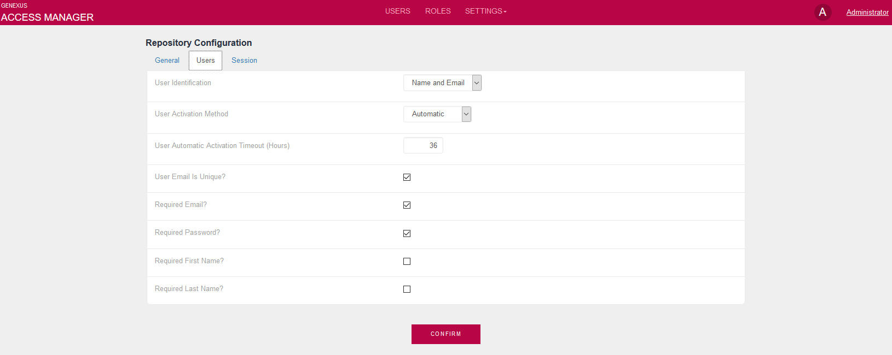
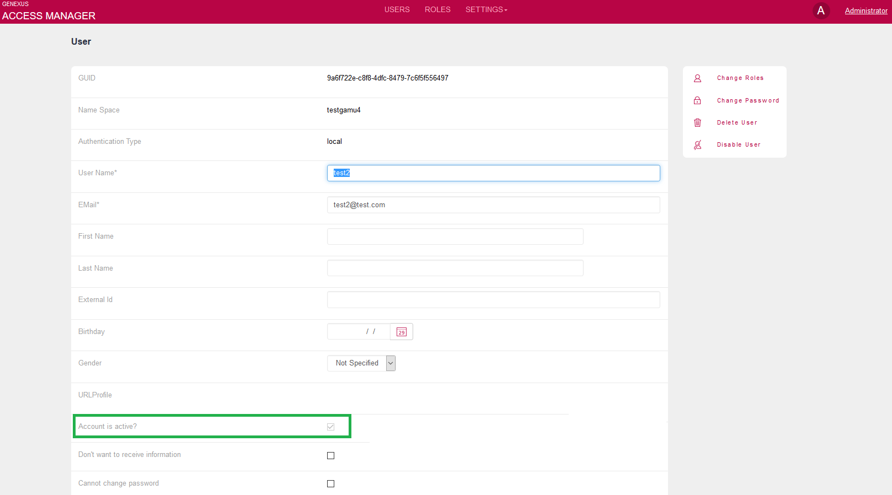

This Repository property determines whether users who register will have their accounts automatically activated, or if they will have to activate them in a second step after registering.
| Automatic | The user account is automatically activated after the registration. |
| User | The user will need to confirm the activation of the account. |
| Administrator | Only the administrator activates user accounts. |
The user activation is for all the repositories (for GAM and not for any particular repository). Once the account is activated, it cannot be set to inactive status.
To disable the user, it has to be blocked, deleted, or just disabled from accessing the Repository (see Users enabled or disabled in the GAM Repository).
The UserActivationMethod is a Repository property and should be configured using the GAM Web Backoffice. The GAMRepositoryConfiguration web panel is an example where the property is used.

The way to use it in GeneXus code (by using the GAM API) is as follows:
&Repository.Load(&Id) &Repository.UserActivationMethod = &UserActivationMethod &Repository.Save() if &Repository.Success() Commit else &Errors = &Repository.GetErrors() For &Error in &Errors Msg(Format(!"%1 (GAM%2)", &Error.Message, &Error.Code)) EndFor Endif
The GAMExampleRegisterUser Web Panel is a sample object included in the GAM Examples folder and may be used as an example of web registration form.
Depending on the value set in this property, users who register in GAM will need to activate their account and wait for the administrator to activate it when it is not immediately activated.
This is the case for the "User" value in this property.
When you set this property a temporal key is created, this key has a timeout which is configured in the GAM.UserAutomaticActivationTimeout property in hours.
You can see a sample code in the GAMCheckUserActivationMethod object.
Developer can program how activation key is sent to user:
If &Repository.UserActivationMethod = GAMUserActivationMethod.User &ActivactionKey = &User.GetActivationKey(&Errors) // Send an email to the user (*) Else Do 'DisplayMessages' Endif
(*) to activate the user account, send an email to the user including a URL like the following: http://server/app/webpanel_ActivateAccount.aspx?&ActivactionKey.
&ActivactionKey is the key used to activate the account and it is received as a parameter.
In webpanel_ActivateAccount, activate the user's account using the GAMRepository.ActivateUser method with the &ActivationKey received as a parameter. The sample code is as follows:
Event Start
&isOK = GAMRepository.ActivateUser(&ActivactionKey, True, &Errors)
If &isOK
Msg("Your user account was successfully activated !!")
Else
Do 'DisplayMessages'
Endif
EndEvent
The GAM administrator user may activate the account by executing the GAM Web Backoffice, editing the user properties, and checking or unchecking "Account is active".

You can do it also via code, using the GAM API:
&User.Load(&UserId)
&User.Isactive= TRUE
&User.Save()
If &User.Success()
Commit
Else
&Errors = &User.GetErrors()
For &Error in &Errors
Msg(Format(!"%1 (GAM%2)", &Error.Message, &Error.Code))
EndFor
Endif
The IsActive property indicates if the user account is active; it can only be set to TRUE as explained above in this document.
User Automatic Activate TimeOut property